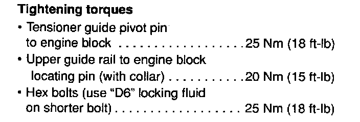

Engine Torque Specifications
Engine Torque Specifications 6-Cyl.Engine And Transmission Codes:

Cylinder Head Cover And Intake Manifold Torque Specifications:

Camshaft Torque Specifications:

Continued:

Continued:

Camshaft Torque Specifications Continued:

Continued:

Cylinder Head Torque Specifications:

Chain Tensioner Torque Specifications:

Flywheel Or Driveplate To Crankshaft Torque Specifications:

Component Torque/Ft. Lbs.
Camshaft Sprocket Bolts 74
Camshaft Sprocket Cover Bolts 18
Connecting Rod Bolts 22 [01]
Cylinder Head Bolts [02]
Cylinder Head Cover Nuts 7
Double Drive Chain Sprocket Bolt 74
Driveshaft To Flange Bolts 33
Engine Mounts To Engine Bolts 44
Engine Mounts To Engine Rubber Mounts Bolt 44
Engine Rubber Mount To Bracket Bolt, Front 41
Engine Rubber Mount To Bracket Bolts, Right 18
Engine Support To Body Bolts 37
Engine To Transmission Bolts, M10 44
Engine To Transmission Bolts, M12 59
Flywheel Bolts 22 [03]
Front Crankshaft Seal Flange Bolts 7
Front Crankshaft Seal Flange Bolts 15
Front Crankshaft Seal Mounting Flange Bolts 18
Front Exhaust Pipe To Catalytic Converter B 18
Front Exhaust Pipe To Exhaust Manifold Bolt 30
Intermediate Shaft Guide Ring Bolts 7
Main Bearing Cap Bolts 48
Oil Cooler Cover Bolt 18
Oil Drain Plug 37
Oil Filter Housing Bolt 15
Oil Injection Nozzle Bolts 87 [04]
Oil Pan Bolts 15
Oil Pump Drive Cover Bolts 7
Oil Pump To Block Bolts 18
Oil Pressure Relief Valve To Block 44 [04]
Oil Pressure Switch 18
Oil Temperature Sender 7
Pressure Plate To Flywheel Bolts 15
Rear Crankshaft Seal Flange Bolts 7
Ribbed Belt Tension Roller Bolts 18
Speed/Reference Sender Bolt 7
Thermostat Housing Bolts 7
Timing Chain Guide Rail Bolts 15
Timing Chain Locating Pin w/Collar 18
Timing Chain Pivot Pin 18
Timing Chain Tensioner Bolt 15
Timing Chain Tensioner w/Plate Bolts 7
Transmission Mount To Transmission Bolts 18
Transmission Mount To Transmission Rubber M 44
Transmission Rubber Mount To Bracket Bolts 22
Upper Intake Manifold Bolts 18
Vibration Dampener Bolt 328
Water Pump Bolts 15
Water Pump Pulley To Water Pump Nuts 18
[01] -- Plus an additional 1/2 (180°) turn.
[02] --Tighten cylinder head in four stages as follows:

Stage I 40 Nm (30 ft. lbs.)
Stage II 60 Nm (44 ft. lbs.)
Stage III 1/4 turn (90°)
Stage IV 1/4 turn (90°)
NOTE:
- Loosen head bolts in reverse of sequence shown in the illustration.
- Re-torquing cylinder head after repairs is no longer necessary.
[03] -- Plus an additional 1/4 (90°) turn.
[04] -- Inch lbs.